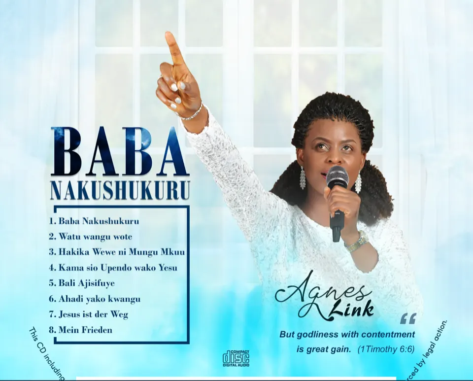
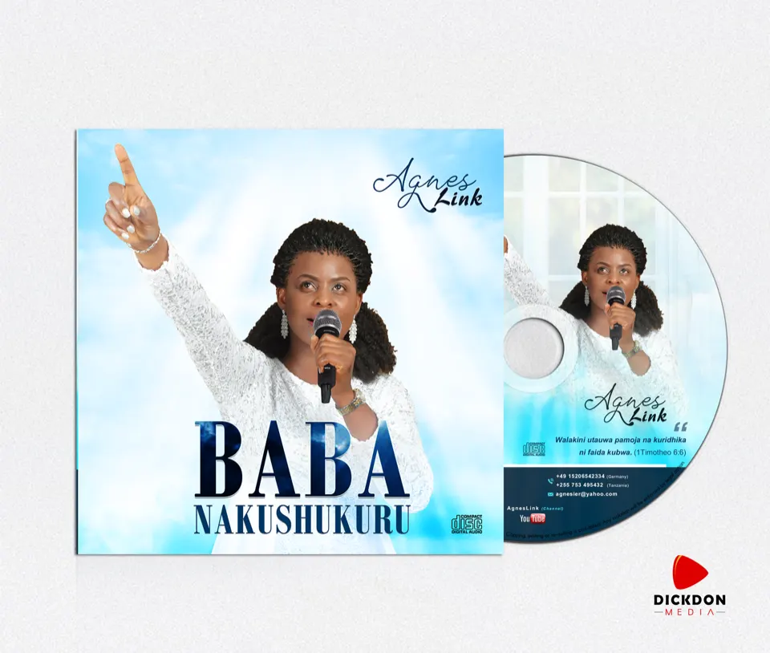
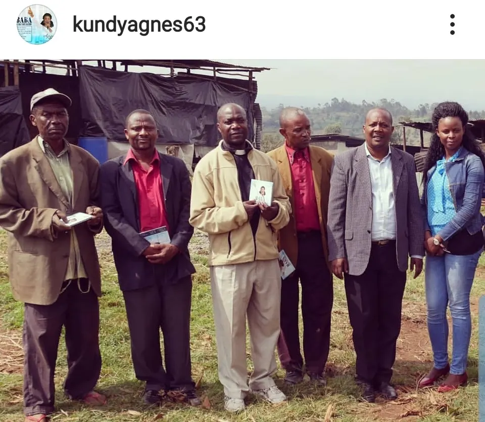
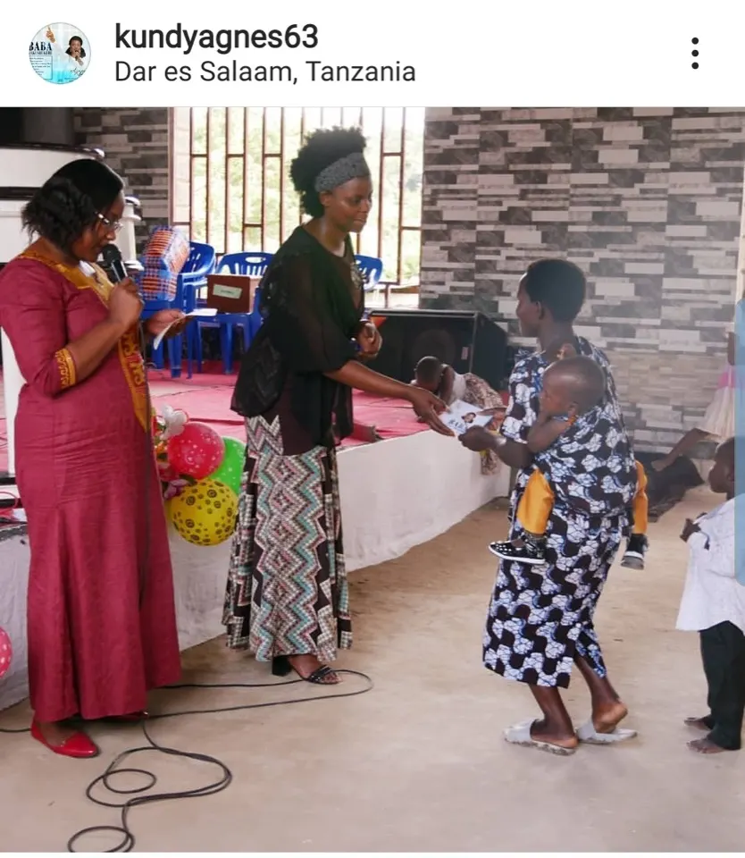
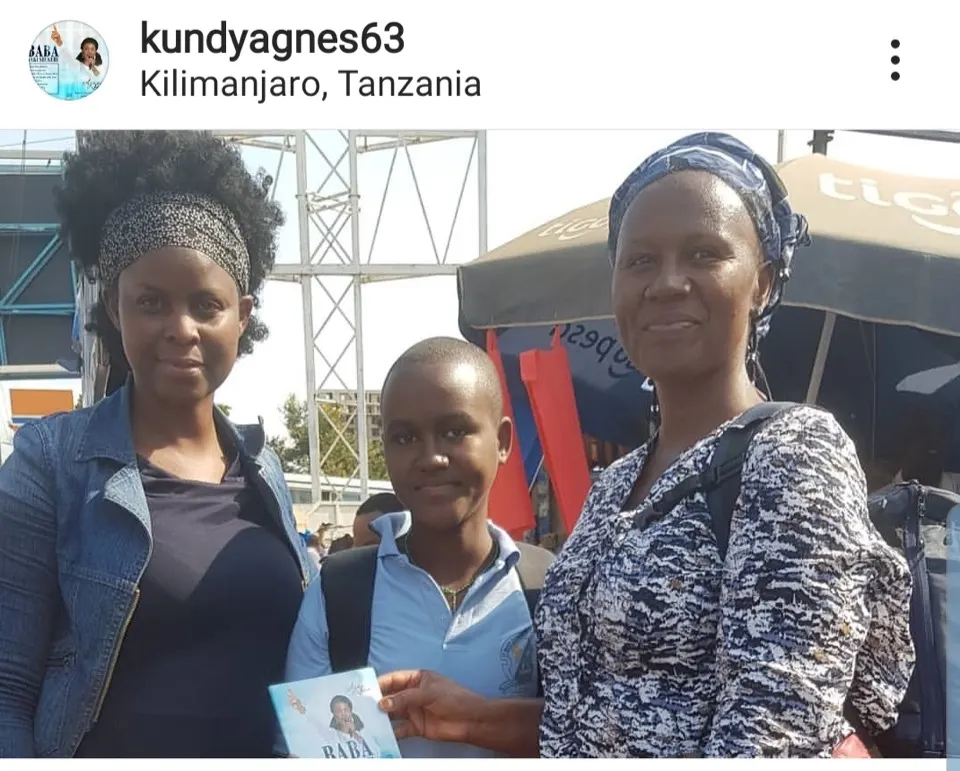
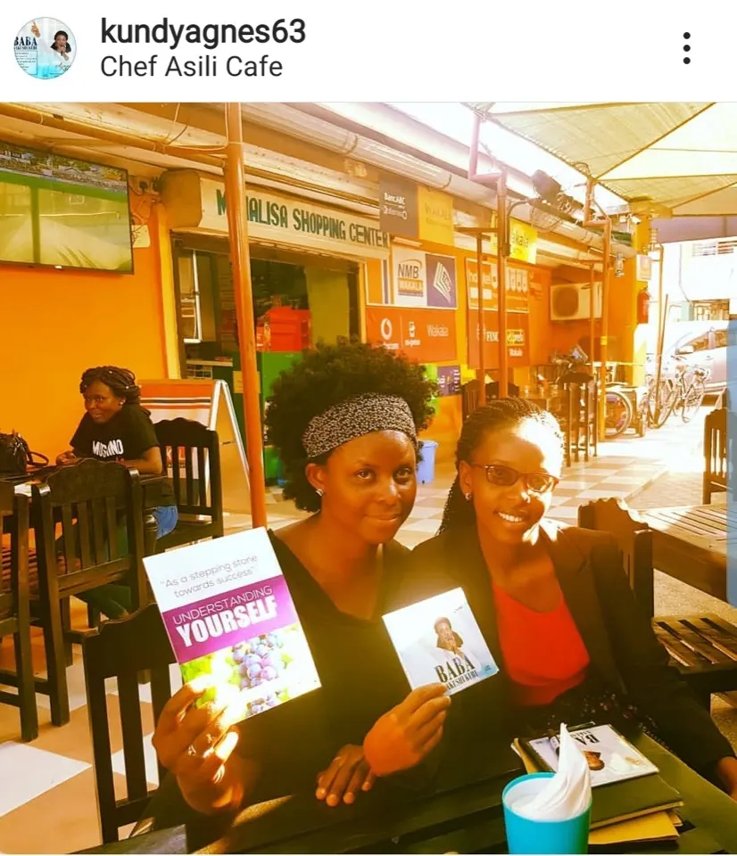
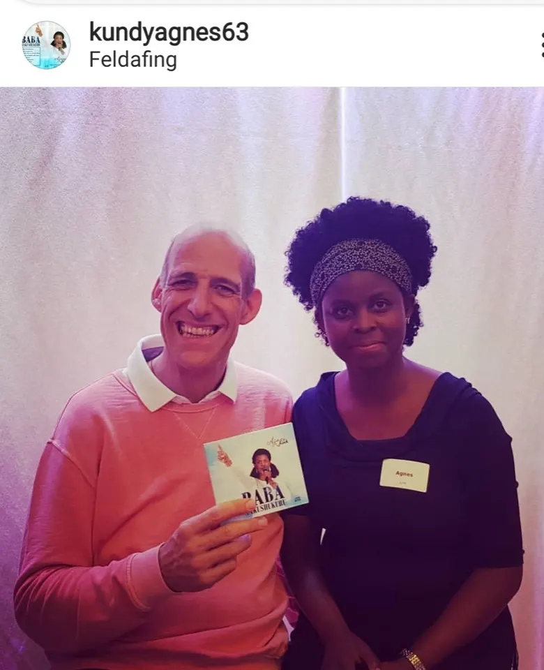
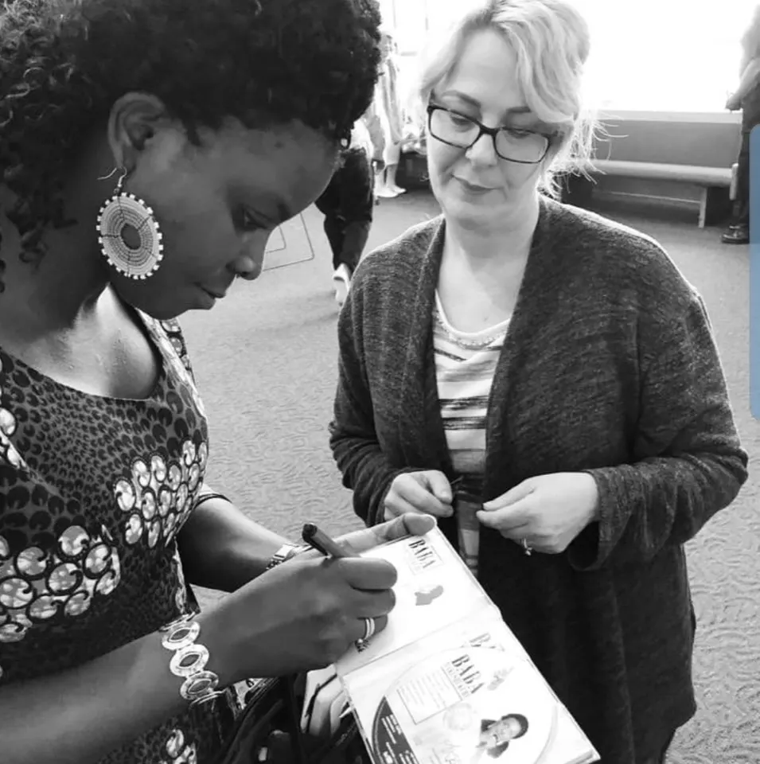
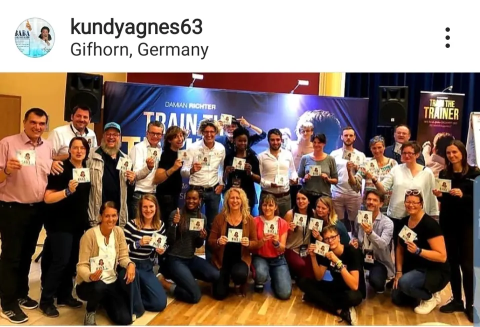
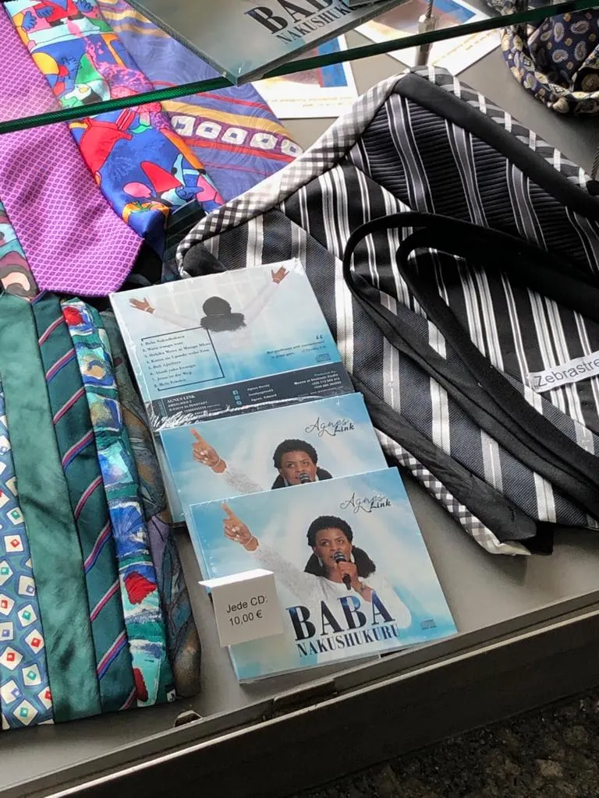

AgnesLink Channel
Audio & DVD

FIRST CD AUDIO-BABA NAKUSHUKURU
The Album production started September 2018 when I firstly recorded the vision song 'Baba nakushukuru'. then same September the second song 'Watu wangu wote' and the third song 'Hakika wewe ni Mungu mkuu' were recorded. The rest 5 songs were recorded in January 2019 and immediately the album was closed with 8 songs. The two songs are sang in German Language while 6 songs in Kiswahili. The album was officially released to AgnesLink Channel as Lyrics and the CD was printed and start being distrubuted, January 2019.
FIRST DVD-BABA NAKUSHUKURU
Video was done in Kilimanjaro Region Janury 2019, and was officially released AgnesLink Channel June, 2019.


BABA NAKUSHUKURU CD Journey
January, 2019 first printing was done and 600 CDs were printed in Tanzania and in three months there were all distributed to different people in different regions in Tanzania Including Kilimanjaro, Arusha, Dodoma, Dar es Salaam and Mwanza. In April, 2019 second Printing was done in Germany and 1000 CDs were Printed. Same April I was opportuned to do an official concert in Vermont and more than 70 CDs were distributed. In US I was opportuned to visit Chicago, New York, Nebraska Omaha, Boston and in all Cities i went a number of CDs were distributed. So in this 2 weeks trip to America 210 Cds were distributed. Until now more than 1,500 twousands CD have been distributed in different countries i have visited in the year 2019 from Janury to September. These countries includes, Tanzania, Germany, United Kindoms (London&Liverpool), Mexico, Canada, Nigeria, South Africa, Greece, Turkey, and Kenya. Considering the songs are new from my own writting, the singer is new in the industry, this is a big achievement from humble start. I cant stop thanking God and thanking you all for your support. You have all made it possible my singimg to be a big support for the Project under Agri Connect Tanzania, which have been my wish.
CD "BABA NAKUSHUKURU HAS KEPT GOING GLOBAL
Your copy is surely on its way ...








Get your copy NOW!
- Amselweg 2, D-63674 Altenstadt Germany
- peter.w.link@gmail.com
- (49) 160 90800222
- (49) 160 90800222